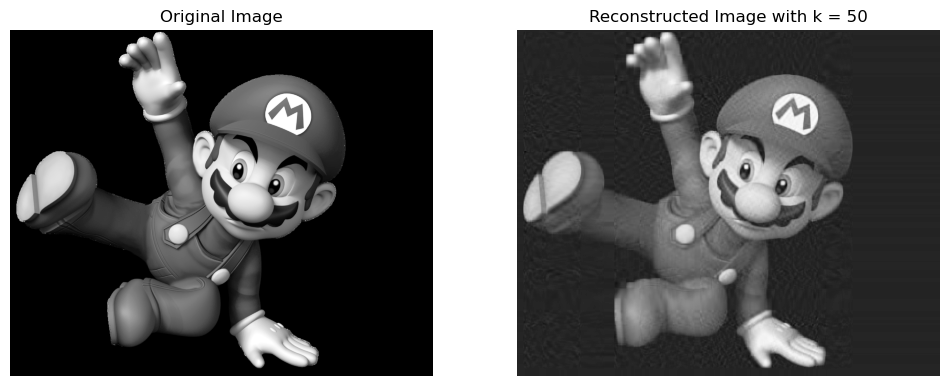
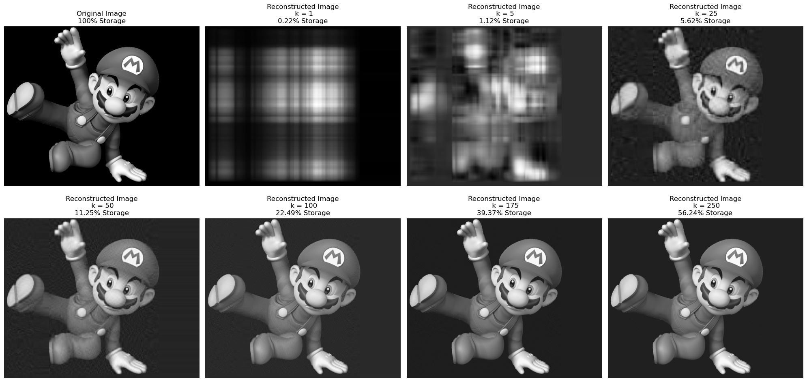

Reconstructing an image using Singular Value Decomposition (SVD)
Author
Anweshan Adhikari
Published
May 22, 2023
Introduction
The use of unsupervised learning is not to make predictions, but to uncover hidden structures in the features of the data. In this blog post, we’re going to dive into one such unsupervised learning method known as Singular Value Decomposition (SVD).Singular Value Decomposition (SVD) is a fundamental technique in linear algebra specially in data compression and noise reduction. Also in this blog post we will explore an interesting application of SVD - image reconstruction. The SVD of a matrix \(A \in \mathbb{R}^{m \times n}\) is:
\(A=UDV^T\) ;
U and V are orthogonal matrices. This means that their columns are orthogonal unit vectors. D is a diagonal matrix containing singular values s\(\sigma_i\) of A. These values represent the magnitudeof each new dimension in the transformed data.
Converting image to Grayscale
Here I have chosen a RGB colored image of Mario and converted it to a grayscale image using the PIL package.
from PIL import Imagefrom matplotlib import pyplot as plt import urllibimport numpy as np
Let’s look at the shapes of the original image and grayscale image:
a=np.shape(img)b=np.shape (grey_img)print(f"Shape of original image: {a}")print(f"Shape of original image: {b}")
Shape of original image: (809, 988, 4)
Shape of original image: (809, 988)
The grayscale image retains the same width and height but loses the color channels. Now the grayscale image serves as a 2-dimensional matrix, which can be input into the SVD.
k =50reconst_img = svd_reconstruct(grey_img, k)fig, axarr = plt.subplots(1, 2, figsize=(12, 6))axarr[0].imshow(grey_img, cmap='Greys')axarr[0].axis('off')axarr[0].set_title('Original Image')#reconstructing image using 50 singular valuesaxarr[1].imshow(reconst_img, cmap='Greys')axarr[1].axis('off')axarr[1].set_title('Reconstructed Image with k = '+str(k))plt.show()

At this k value, we can already see the image coming together which indicates that using only the 50 most important features can reconstruct our image to a decent level.
Experimentation
By setting k to 50, we are saying that we want to reconstruct our image using only the top 50 most important features. This compresses the image because fewer features are used to construct the image.
As k increases, the reconstructed image will become more and more similar to the original because more features are used in the reconstruction. Oppositely, As k decreases, less information is used in the reconstruction, and the image becomes more and more compressed. We can see this in the graph below
import matplotlib.pyplot as pltdef storage_percentage(original, k):return (k * (original.shape[0] + original.shape[1]) + k) / (original.shape[0] * original.shape[1]) *100# Creating the subplotsfig, axarr = plt.subplots(2, 4, figsize=(20, 10))#original iamgeaxarr[0, 0].imshow(grey_img, cmap="Greys")axarr[0, 0].axis("off")axarr[0, 0].set_title("Original Image\n100% Storage")#no. of featuresk_values = [1,5, 25, 50,100, 175, 250]for i, k inenumerate(k_values, start=1):# Reconstructing the image reconst_img = svd_reconstruct(grey_img, k) row = i //4 col = i %4 axarr[row, col].imshow(reconst_img, cmap="Greys") axarr[row, col].axis("off") axarr[row, col].set_title(f"Reconstructed Image\n k = {k}\n{storage_percentage(grey_img, k):.2f}% Storage")plt.tight_layout()plt.show()

As mentioned earlier, the selection of k is a balance between reducing storage space (lower k) and preserving image quality (higher k). It is interesting to see how efficiently an image can be compressed/reconstructed without losing much details from the original greyscale image. Moreover, there is a little observational difference when k is set to 175 and 250, however the percentatge of storage is significantly different. At the value of k =100, the image is easily recognizable while only taking 22.39% of the original storage space.
Optional Extras:
The compression factor is the percentage of singular values retained in the reconstruction. For example, a compression factor of 0.50 would mean retaining 50% of the original singular values. In the code below, we modified our svd_reconstruct method for users to specify a desired compression factor and select the number of components k to use based on this selection. I have demonstrated an example with a compression factor of 0.08
The use of SVD and the implementation of the svd_reconstruct function allow efficient image compression and uncover hidden structures in the features of the data. The ability to control the level of reconstruction could be a great tool for various image processing applications.